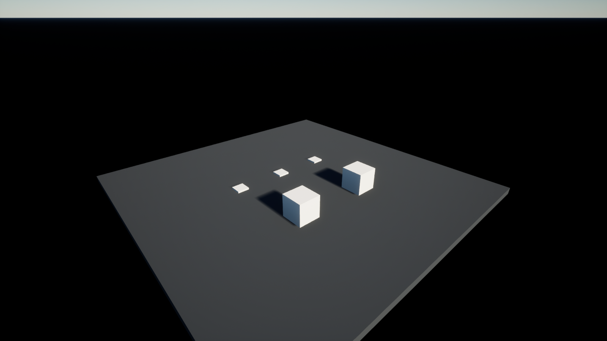
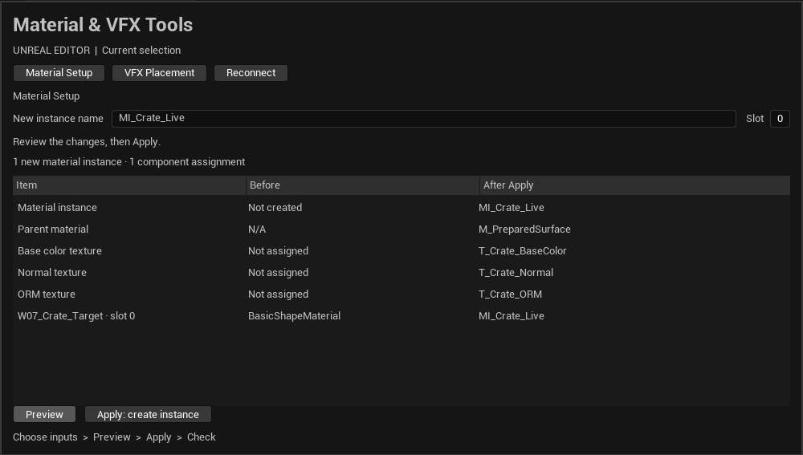
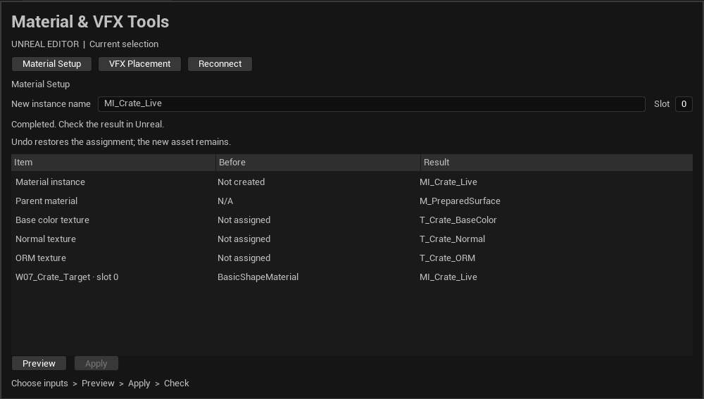
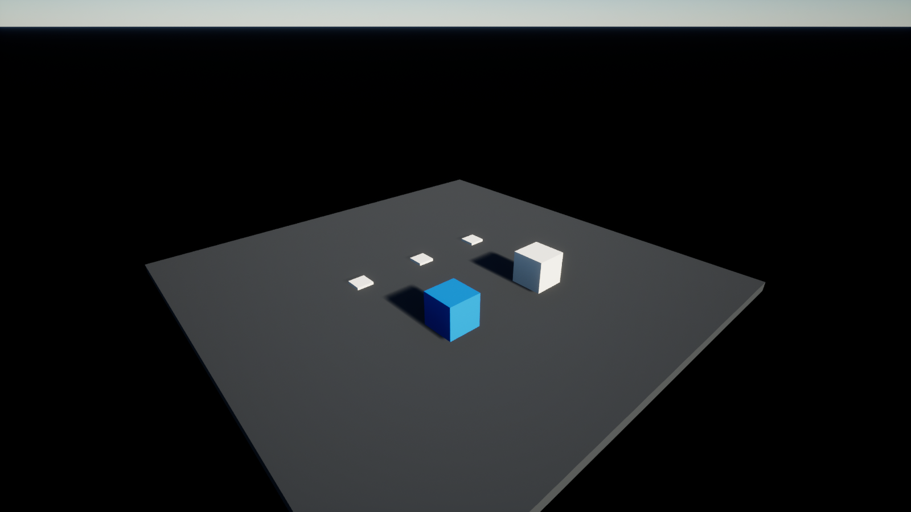
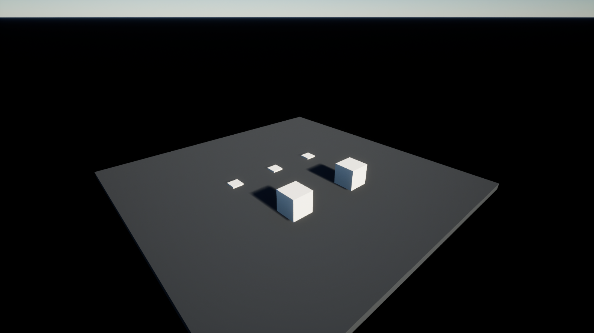
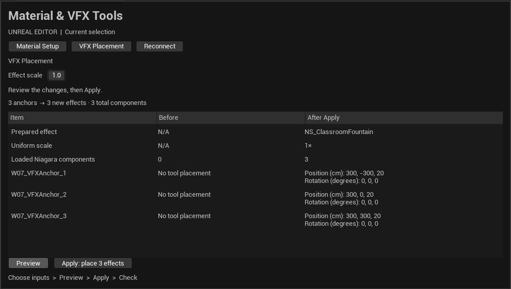
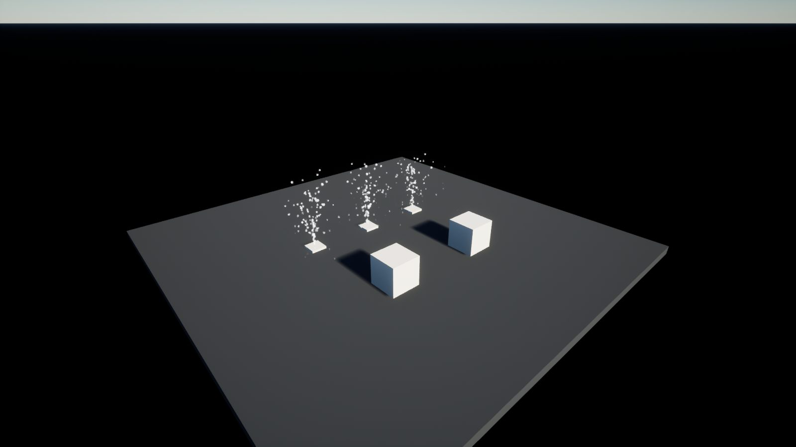
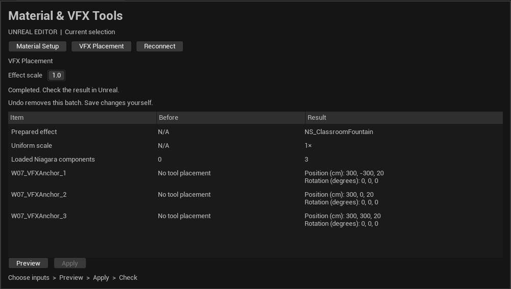
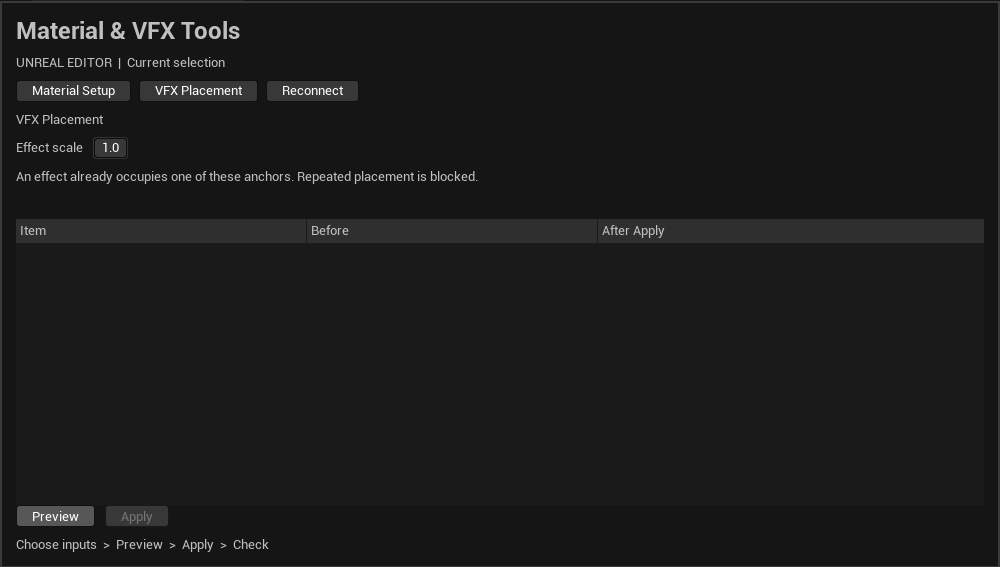

Week 7 · Current teaching materials
Material and VFX walkthrough
Recorded from the prepared Unreal 5.7.4 project on 15 October 2026.
Current run sheet. Native panel and viewport captures contain no AI pointer overlay. These are recorded states, not a running simulation.
1. Prepared scene
Two plain cubes and three empty marker bases. Run preflight and confirm the target and textures.

2. Preview material
One target, slot 0 and three texture roles. Preview makes no scene changes.

3. Apply material
One instance is created and assigned to the target. The protected cube and shared mesh default stay unchanged.

Inspect the matching result

4. Undo assignment
Undo restores the component assignment. The created instance remains in the Content Browser; it is not a full asset rollback.

5. Preview VFX
Three reviewed markers, one fountain per marker. Confirm the intended count before Apply.

6. Inspect three fountains
Three particle systems run at the marker locations. Check positions and the dark stage for visible particles.

Inspect the matching result

7. Reject a duplicate batch
A second placement at the same anchors is blocked. No duplicate actors are created.

8. Restore the classroom state
Undo the VFX placement batch. The three marker bases remain. The final live readback confirmed plain cubes and zero effects.